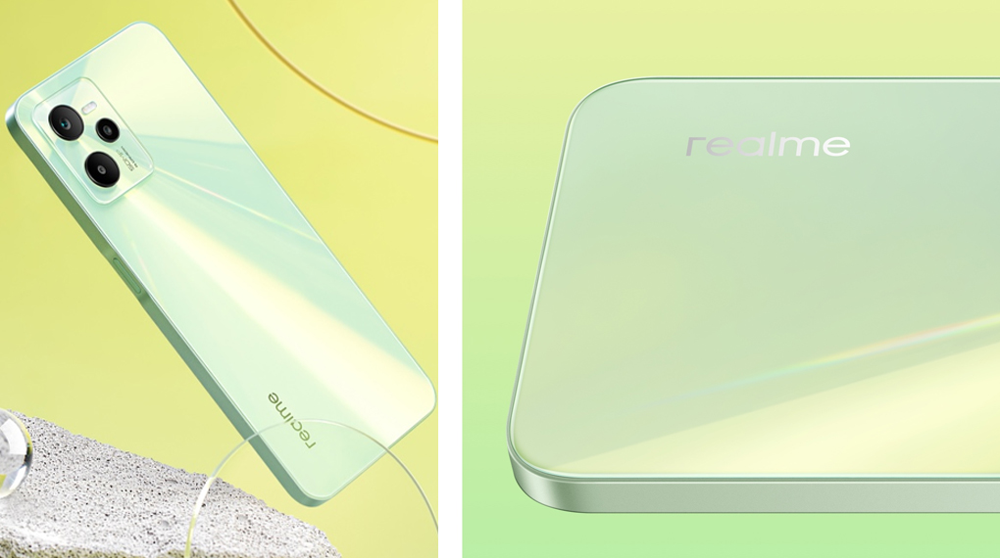
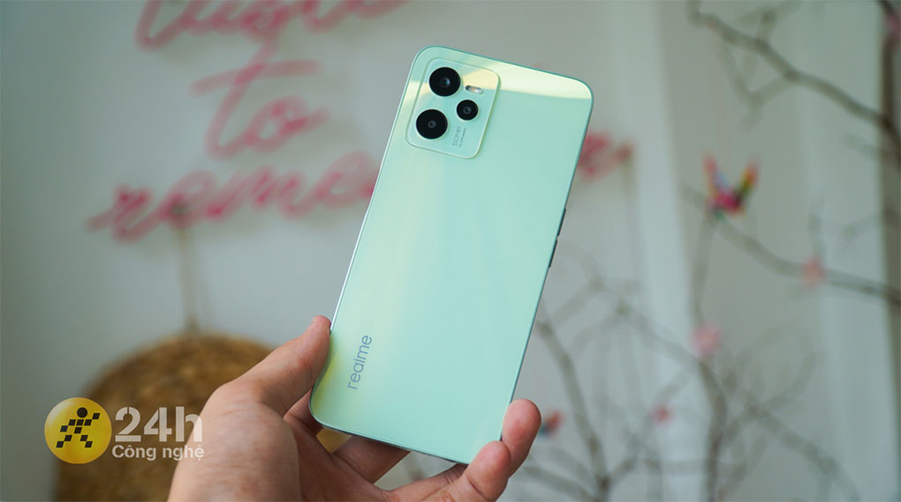
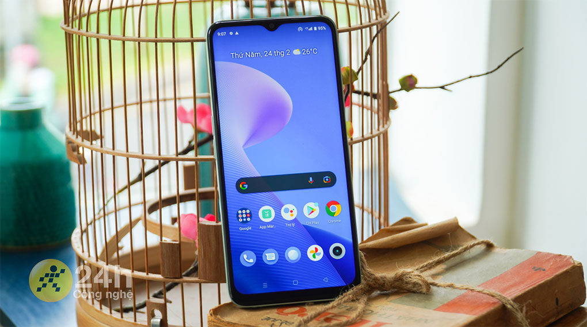
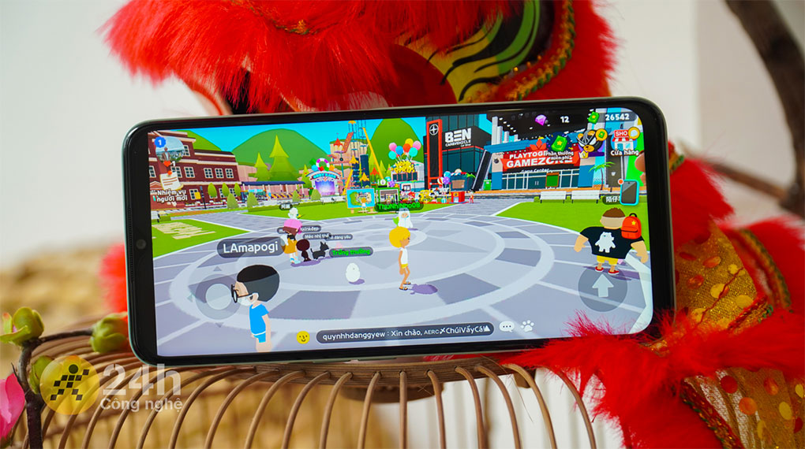
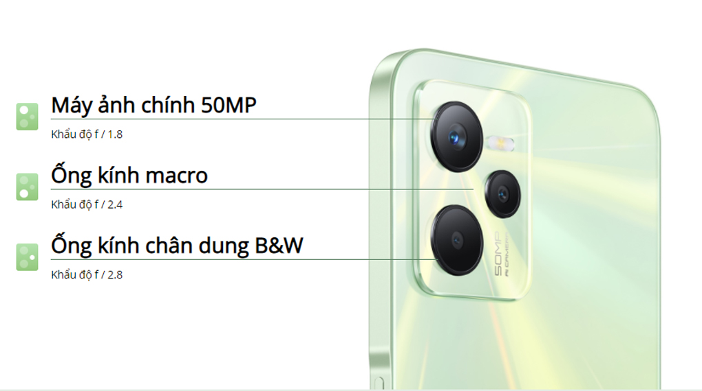
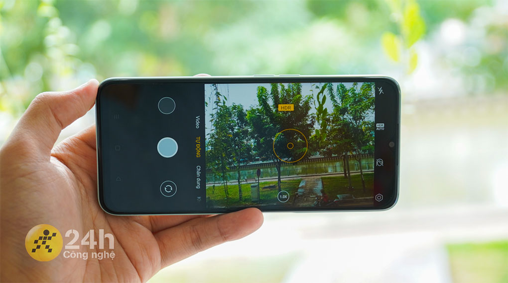

Điện thoại Realme C35
Realme C35 thuộc phân khúc giá rẻ được nhà Realme cho ra mắt với thiết kế trẻ trung, dung lượng pin lớn cùng camera hỗ trợ nhiều tính năng. Đây sẽ là thiết bị liên lạc, giải trí và làm việc ổn định,… cho các nhu cầu sử dụng của bạn.
Thiết kế thời thượng, màu sắc thời trang
Realme C35 sở hữu 2 màu sắc trẻ trung: Đen tuyền và xanh huyền ảo với một thiết kế vô cùng độc đáo, khung bezel bo góc làm bằng vật liệu 2D phát sáng linh động, mang đến hiệu ứng màu ấn tượng khi thay đổi góc nhìn.
Cùng với đó là khung và mặt lưng làm bằng nhựa giả kính hạn chế bám mồ hôi và vân tay, tuy nhiên do thiết kế khá vuông vức nên tổng thể máy có vẻ hơi sắc cạnh, vì vậy khi cầm cảm giác có hơi cấn nhẹ, khi sử dụng bạn nên đeo ốp lưng vào để cầm được thoải mái hơn.
Nhưng bù lại, Realme C35 được xem là nhẹ nhất và mỏng nhất trong dòng C (tính đến 3/2022), chỉ mỏng 8.1 mm và trọng lượng 189 g nên khi sử dụng máy trong thời gian dài không lo mỏi tay. Máy cũng sở hữu cảm biến vân tay cạnh bên cho việc mở khóa dễ dàng, mang đến sự tiện lợi trong quá trình sử dụng.
Giải trí sống động cùng màn hình 6.6 inch
Mặc dù sở hữu màn hình giọt nước và có phần cằm dưới hơi dày, nhưng Realme C35 lại sở hữu màn hình lớn kích thước lên đến 6.6 inch với độ phân giải Full HD+, mang tới một chất lượng hình ảnh chi tiết, sắc nét, màu sắc sống động.
Tấm nền IPS trên Realme C35, mình có cảm giác là nhà sản xuất đẩy tone màu lên giúp cho dải màu của máy trông tươi hơn. Khi mà mình lướt Tiktok thì chất lượng hiển thị, màu sắc khá là tươi và nịnh mắt. Đặc biệt là những video có các nội dung nhiều màu sắc như các MV Kpop thì chắc chắn sẽ cực kỳ ưng ý.
Hơn nữa độ sáng 600 nits cho chất lượng hiển thị khá tốt ở ngoài trời, khi mình nghiêng màn hình nhẹ qua các góc chất lượng hình ảnh hiển thị cũng không bị biến đổi quá nhiều.
Ghi lại trọn vẹn hình ảnh sống động
Realme C35 có camera trước 8 MP, cho chất lượng hình ảnh selfie ổn định, nếu chỉ nói về màu sắc thì khá tốt, tái tạo màu sắc rất ổn nhưng để mà nói về độ chi tiết thì con này vẫn chưa tái tạo được nhiều chi tiết và bị bệt một số chỗ trên hình.
Trang bị camera chính 50 MP mang lại những bức ảnh rõ nét hơn, chi tiết hơn với độ phân giải cao, không sợ bị bể ảnh ngay cả khi bạn zoom lên rất nhiều lần.
Những bức ảnh khi chụp ngoài trời cho ra chất lượng tương đối rất tốt, khả năng tái tạo màu sắc ổn. Nhưng mà một số hình ảnh sẽ được đẩy tone màu lên một chút, thì cái này vẫn sẽ lại tuỳ thuộc vào sở thích của mỗi người, có bạn sẽ thích màu sắc nó tươi hơn, sặc sỡ hơn để không phải chỉnh lại màu sắc nữa, còn một số bạn thì thích màu sắc nó phải chân thực hơn.
Khi chuyển qua với chế độ chụp ảnh ban đêm, Realme C35 đã làm khá tốt, các vùng tối được đẩy sáng lên một mức, các ánh đèn không bị loé quá nhiều, duy nhất chỉ có một điểm đó là về độ chi tiết thì vẫn còn hơi bị mờ một vài chỗ.
Còn khi mình chuyển sang chụp người với chế độ chân dung thì hình ảnh được phân rõ giữa chủ thể và nền ở đằng sau, các chi tiết vẫn được hiện lên đầy đủ. Nhìn chung thì với điện thoại giá dưới 4 triệu thì cũng gọi là ổn áp trong tầm giá.